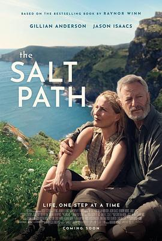

盐之路 / The Salt Path
又名：盐径偕行 / 盐路上有你(台) / Der Salzpfad
听说英国旅游宣传片
作品信息
| 导演 | 玛丽安娜·埃利奥特 |
| 编剧 | 丽贝卡·伦科维茨 / Raynor Winn |
| 主演 | 詹森·艾萨克 / 吉莲·安德森 / 丽贝卡·伊内森 / 詹姆斯·兰斯 / 赫米奥娜·诺里斯 / 安格斯·瑞特 / 劳埃德·哈钦森 / 玛丽安娜·埃利奥特 / Megan Placito / 詹姆斯·克雷文 / 罗比·欧尼尔 / Sasha Frost / 贝恩·科拉科 / Jude Marsh / Hannah Brownlie / Tucker St. Ivany / Pippa Hinchley / Lainey Shaw / 格温·库兰特 / 塔姆琳·亨德森 |
| 类型 | 剧情 |
| 制片国家/地区 | 英国 |
| 语言 | 英语 |
| 上映日期 | 2024-09-05(多伦多电影节) / 2025-05-30(英国) |
| 片长 | 115分钟 |
| IMDb | tt27766440 |
说过什么
2025-10-25 07:32:24
广播 · 想看
听说英国旅游宣传片
最后一次看到是 2026-08-01T11:07:55+10:00 · 豆瓣原页